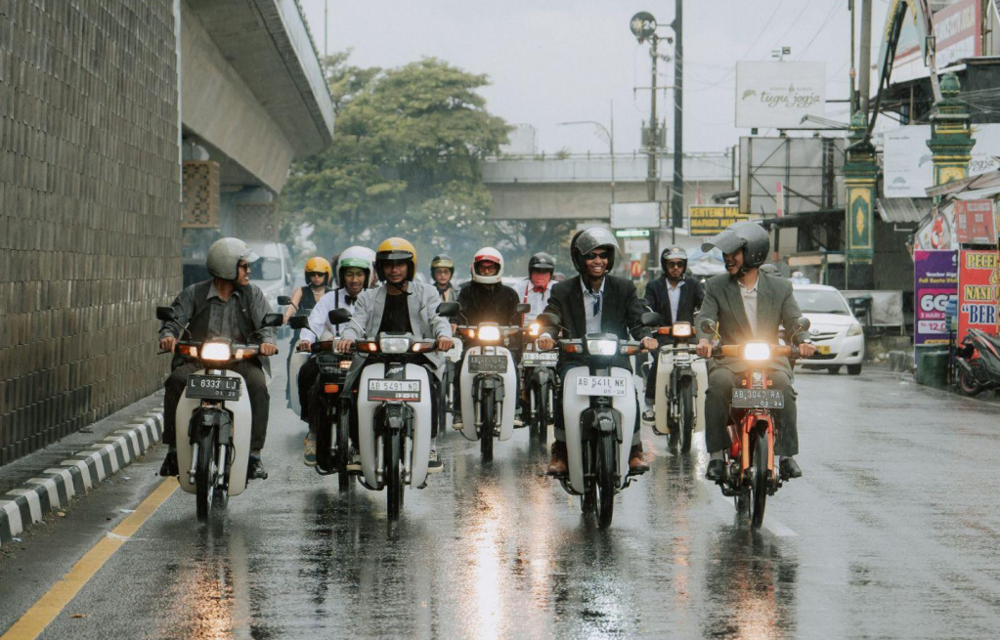

Mengenal "Berkendara Ria": Lebih Dari Sekadar Komunitas Motor
Ditulis oleh Founder Berkendara Ria • 15 Feb 2026
Lahir dari obrolan santai di angkringan Tugu, Berkendara Ria tumbuh menjadi salah satu simpul otomotif roda dua yang diperhitungkan di Yogyakarta. Kami bukan klub eksklusif satu merek, kami adalah rumah bagi siapa saja yang mencintai sensasi angin menerpa wajah saat berkendara.
Visi Kami: Safety & Fun
Banyak stigma negatif tentang anak motor: arogan, berisik, ugal-ugalan. Berkendara Ria hadir untuk mematahkan itu. Visi utama kami sederhana: "Berkendara Aman, Pulang Senang".
Kami percaya bahwa jalan raya adalah ruang publik yang harus dinikmati bersama dengan santun. Tidak perlu knalpot bising untuk didengar, cukup aksi nyata bakti sosial dan taat rambu yang menjadi identitas kami.
Kolaborasi dengan RC Ceria
Sejak 2025, Berkendara Ria resmi menggandeng RC Ceria Yogyakarta sebagai strategic partner. Kolaborasi ini menyatukan semangat motoran modern dengan kearifan lokal klub klasik. Bersama RC Ceria, kami rutin mengadakan event "Classic x Modern" setiap bulan.
Kegiatan Rutin
-
➜
Morning Ride (Sunmori): Agenda wajib setiap Minggu pagi menyusuri sudut-sudut eksotis Jogja.
-
➜
Kopdar Santuy: Diskusi ringan seputar mesin, modifikasi, hingga rencana touring, biasanya Jumat malam.
-
➜
Charity Ride: Berkendara sambil berbagi ke panti asuhan atau korban bencana alam.
Kenapa Harus Gabung?
Karena di sini kamu bakal nemuin saudara baru. Mau kamu pakai matic 110cc, motor custom, atau moge 4 silinder, di meja kopi kita semua sama rata. Tidak ada senioritas, yang ada hanya solidaritas.
Ingin menjadi bagian dari keluarga besar kami?
Daftar Jadi Member